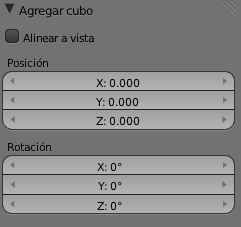
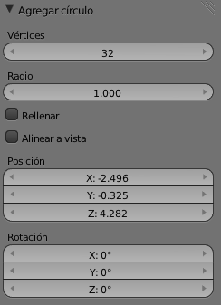
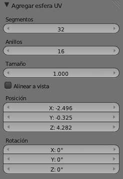
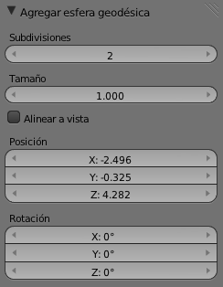
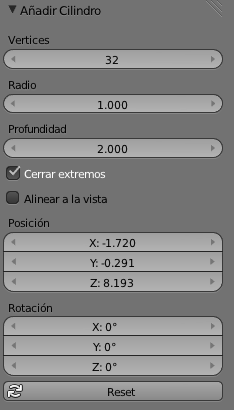

Opciones
Como ya conocemos el menú Añadir/Malla lo que nos proponemos en este apartado es aprender qué opciones se incluyen en las mallas para sacarles el máximo partido.
Al añadir una primitiva, que ese es el nombre que reciben la mallas prediseñadas, en el cuadro Herramientas ("T") se muestran sus opciones, pero cuidado porque sólo podemos usarlas mientras no se haga ninguna otra edición en el editor Vista 3D.
Tras Añadir/Malla/Cubo estas son las opciones:
Alinear a vista hace referencia a colocar el objeto de tal manera que su eje Z Local quede perpendicular al plano del monitor. Vemos que algunas ediciones como Rotar o definir una localización precisa se pueden hacer ahora aunque, como ya sabemos, eso lo podemos modificar en cualquier momento.
Vamos con las demás:
- Plano. Poco que comentar. Quizá sea una de las primitivas donde más se utilice la opción Alinear a vista.
- Círculo. Aquí hay más opciones. Las novedades son Vértices, que define el número de lados del polígono que simula el círculo (a mayor número mayor realismo y más consumo de recursos), y Rellenar, que hace que se muestre con caras y no hueco.

- Esfera UV. Los Segmentos y los Anillos equivalen a lo que conocemos como meridianos y paralelos en un globo terráqueo.

- Esfera geodésica. En lugar de conseguir la sensación de esfera con caras de cuatro lados, en esta ocasión lo hace con triángulos. Si en el parámetro Subdivisiones bajamos a 1 lo que obtenemos es un icosaedro regular (20 caras).

- Cilindro. La novedad es Cerrar extremos que es equivalente a Rellenar en la primitiva Círculo para que el cilindro esté hueco o simule ser macizo.

- Cono. No aporta novedades a lo ya estudiado.
- Toroide. Tiene muchas opciones que conviene experimentar. Hay una llamada Use Int+Ext Controls que restringe la dilatación del toroide dejando fijo el radio contrario al que estamos editando. Si esta opción no está activada la dilatación afecta a ambos radios.